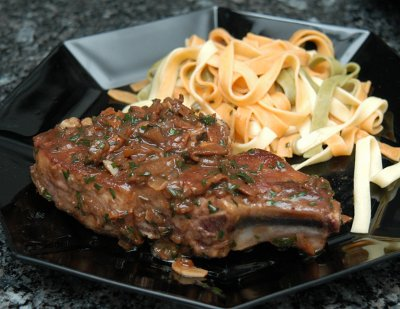

| Zutaten für 4 Personen: | |
| 4 Stück | Kalbskoteletts à 150g |
| wenig | Mehl |
| 2 EL | Öl oder Bratbutter |
| Pfeffer | |
| ¼ Tl | Salz |
| ¼ Tl | Paprika |
| 30g | Steinpilze, getrocknet |
| ½ | Zwiebel |
| ½ | Knoblauchzehe |
| 1 dl | Madeira oder Rotwein |
| 2 dl | Klare Bratensauce, angerührt |
| Streuwürze, Pfeffer | |
| 1 Bund | Schnittlauch |
Die Steinpilze in wenig kalten Wasser ca. 30 Minuten einweichen, ausdrücken und grob hacken.
Zwiebel, Knoblauch und Schnittlauch fein hacken.
Kalbskoteletts in Mehl wenden.
In einer Bratpfanne Öl oder Bratbutter heiss werden lassen. Koteletts beidseitig braten (pro Seite ca. 3 Minuten)
Die Bratensauce anrühren.
Koteletts mit Pfeffer, Salz und Paprika würzen, herausnehmen und warm stellen. Das Fleisch ist genügend gebraten wenn an der Oberfläche kleine rosafarbene Tröpfchen austreten.
Im restlichen Bratfett die Zwiebel und den Knoblauch dämpfen. Pilze beigeben und kurz mitdämpfen.
Mit dem Madeira oder Rotwein ablöschen und fast einkochen lassen.
Die Bratensauce dazugiessen und leise kochen lassen, bis die Sauce dicklich ist.
Den Schnittlauch beigeben und mit Streuwürze und Pfeffer abschmecken.
Die Steaks in der Sauce nochmals kurz heiss werden lassen.
Betty Bossi Fleisch Küche, Seite 52
Super! Passt toll zu den glasierten Kastanien Richard Eigenmann, 28.10.2000
Schmeckte wiederum vorzüglich, RE 24.3.2010
@LINKBACK_TAG@ @WAKELOCK@